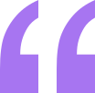

I was an EMT for many years before I joined the bootcamp. I’ve been looking to make a transition and have heard some people who had an amazing experience here. I signed up for the free intro course and found it incredibly fun! I enrolled shortly thereafter. The next 12 weeks was the best - and most grueling - time of my life. Since completing the course, I’ve successfully switched careers, working as a Software Engineer at a VR startup
Daniel Clifford
Verified graduate
Verified graduate
I received a job offer mid-course, and the subjects I learned were current, if not more so, in the company I joined. I honestly feel I got every penny’s worth.

Jonathan Walters
Verified graduate
Verified graduate
I started as a total newbie with virtually no coding skills. I now work as a mobile engineer for a big company. This was one of the best investments I’ve made in myself.
The team was very supprotive and kept me motivated

Janette Harmon
Verified Graduate
Verified Graduate
Thank you for the wonderful experience! I now have a job I really enjoy, and make a good living while doing something I love.
An overall wonderfull and rewarding experience
Patrick Abrams
Verified Graduate
Verified Graduate

The staff seem genuinely concerned about my progress which I find really refreshing. The program gave me the confidence necessary to be able to go out in the world and present myself as a capable junior developer. The standard is above the rest. You will get the personal attention you need from an incredible community of smart and amazing people.
Awesome teaching support from TAs who did the bootcamp themselves. Getting guidance from them and learning from their experiences was easy.
Kira Whittle
Verified Graduate
Verified Graduate

Before joining the bootcamp, I’ve never written a line of code. I needed some structure from professionals who can help me learn programming step by step. I was encouraged to enroll by a former student of theirs who can only say wonderful things about the program. The entire curriculum and staff did not disappoint. They were very hands-on and I never had to wait long for assistance. The agile team project, in particular, was outstanding. It took my learning to the next level in a way that no tutorial could ever have. In fact, I’ve often referred to it during interviews as an example of my developent experience. It certainly helped me land a job as a full-stack developer after receiving multiple offers. 100% recommend!
Such a life-changing experince.
Highly recommended